📁 使用素材一覧（assets_credit.md）
本プロジェクトで使用している画像・動画・アイコン等の出典情報を記録しています。
🖼 画像 / Images
| ファイル名 | 出典サイト | 作者名・ID | ライセンス | メモ（使用箇所） |
|---|---|---|---|---|
| hero-bg.jpg | Pexels での Taryn Elliott による動画 | Taryn Elliott | Free | 動画の先頭をスクリーンショットしてモバイルや遅い回線のための hero セクションの背景静止画（poster）として使用 |
| 001.webp 001.avif |
Unsplash の Timothy Newman が撮影した写真 | Timothy Newman | Unsplash ライセンスで無料 | ギャラリー 1 枚目 茶の木、葉っぱの近距離撮影 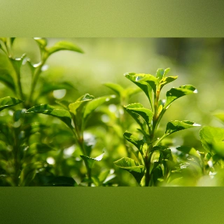 |
| 002.webp 002.avif |
Unsplash の Na visky が撮影した写真 | Na visky | Unsplash ライセンスで無料 | ギャラリー 2 枚目 茶色の木製テーブルに白いセラミックのティーカップ 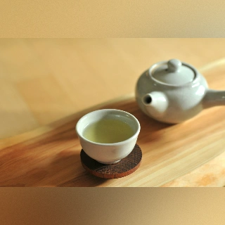 |
| 003.webp 003.avif |
Unsplash の Matcha & CO が撮影した写真 | Matcha & CO | Unsplash ライセンスで無料 | ギャラリー 3 枚目 green powder herbs near scope 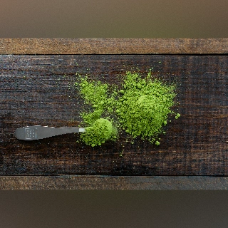 |
| 004.webp 004.avif |
Unsplash の Alice Pasqual が撮影した写真 | Alice Pasqual | Unsplash ライセンスで無料 | ギャラリー 4 枚目 six condiments on jars 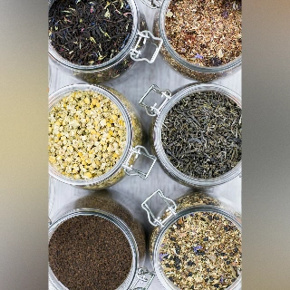 |
| 005.webp 005.avif |
Unsplash の MD. Mehedi Hassan Sharif が撮影した写真 | MD. Mehedi Hassan Sharif | Unsplash ライセンスで無料 | ギャラリー 5 枚目 a close up of a white flower with green leaves 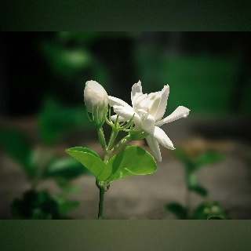 |
| 006.webp 006.avif |
Unsplash の Merve Sehirli Nasir が撮影した写真 | Merve Sehirli Nasir | Unsplash ライセンスで無料 | ギャラリー 6 枚目 stainless steel round container with purple flowers 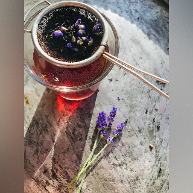 |
| 007.webp 007.avif |
Unsplash の Helen Van が撮影した写真 | Helen Van | Unsplash ライセンスで無料 | ギャラリー 7 枚目 a glass of lemonade with ice and lemon slices 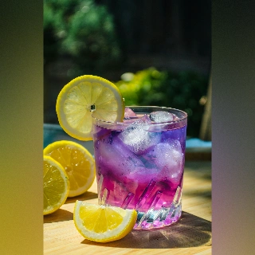 |
| 008.webp 008.avif |
Unsplash の TeaCora Rooibos が撮影した写真 | TeaCora Rooibos | Unsplash ライセンスで無料 | ギャラリー 8 枚目 brown wooden round bowl on white sand 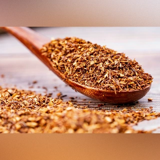 |
| 009.webp 009.avif |
Unsplash の Emily Wade が撮影した写真 | Emily Wade | Unsplash ライセンスで無料 | ギャラリー 9 枚目 黒いポットとミルクティのカップ。手前にスパイスが数種類 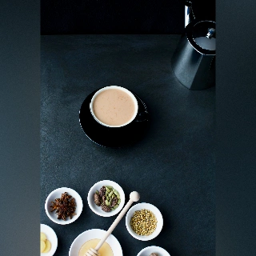 |
| 010.webp 010.avif |
Unsplash の Sergey N が撮影した写真 | Sergey N | Unsplash ライセンスで無料 | ギャラリー 10 枚目 selective focus photography of cup of bowl beside brown teapot 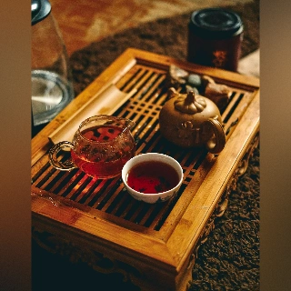 |
| 011.webp 011.avif |
Unsplash の Tuyen Vo が撮影した写真 | Tuyen Vo | Unsplash ライセンスで無料 | ギャラリー 11 枚目 花びらの中国茶  |
| 012.webp 012.avif |
Unsplash の Jelleke Vanooteghem が撮影した写真 | Jelleke Vanooteghem | Unsplash ライセンスで無料 | ギャラリー 12 枚目 アフタヌーンティー 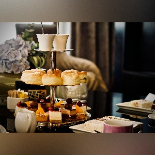 |
| 013.webp 013.avif |
Unsplash の Duong Ngan が撮影した写真 | Duong Ngan | Unsplash ライセンスで無料 | ギャラリー 13 枚目 月餅と茶器に注がれるお茶 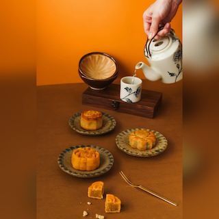 |
| 014.webp 014.avif |
Unsplash の MeSSrro が撮影した写真 | MeSSrro | Unsplash ライセンスで無料 | ギャラリー 14 枚目 A cup of tea sitting on top of a wooden table 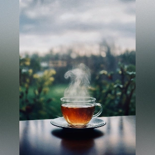 |
| 015.webp 015.avif |
Unsplash の Anita Austvika が撮影した写真 | Anita Austvika | Unsplash ライセンスで無料 | ギャラリー 15 枚目 a cup of tea sits on a table 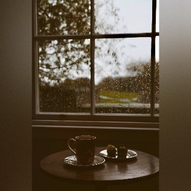 |
| 016.webp 016.avif |
Unsplash の Ewien van Bergeijk - Kwant が撮影した写真 | Ewien van Bergeijk - Kwant | Unsplash ライセンスで無料 | ギャラリー 16 枚目 a person holding a coffee mug with a flower in it 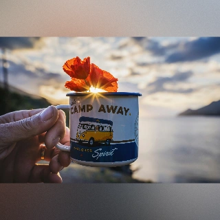 |
| 017.webp 017.avif |
Unsplash の Vivek Kumar が撮影した写真 | Vivek Kumar | Unsplash ライセンスで無料 | ギャラリー 17 枚目 green fields 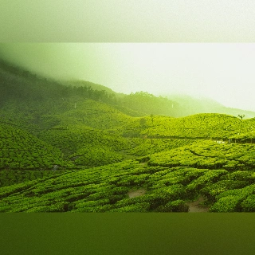 |
🥘 レシピページ掲載画像 recipes.html / recipe.html
画像はレシピ内容をもとに、AIによって生成されたものです。 Certain images were generated with AI assistance (ChatGPT by OpenAI)
| 料理名 | ファイル名 | 画像 |
|---|---|---|
| ささみ・豆腐・ブロッコリーの重ね蒸し | assets/recipe/burokoritofu.webp | |
| 豚とかぼちゃのやさしい煮びたし風（ノンフライ） | assets/recipe/butakabotya.webp | |
| ほんとうにやさしいホットレモネード | assets/recipe/hotlemonade.webp | |
| ザ・蒸しパン（黒糖／プレーン） | assets/recipe/mushipan.webp | 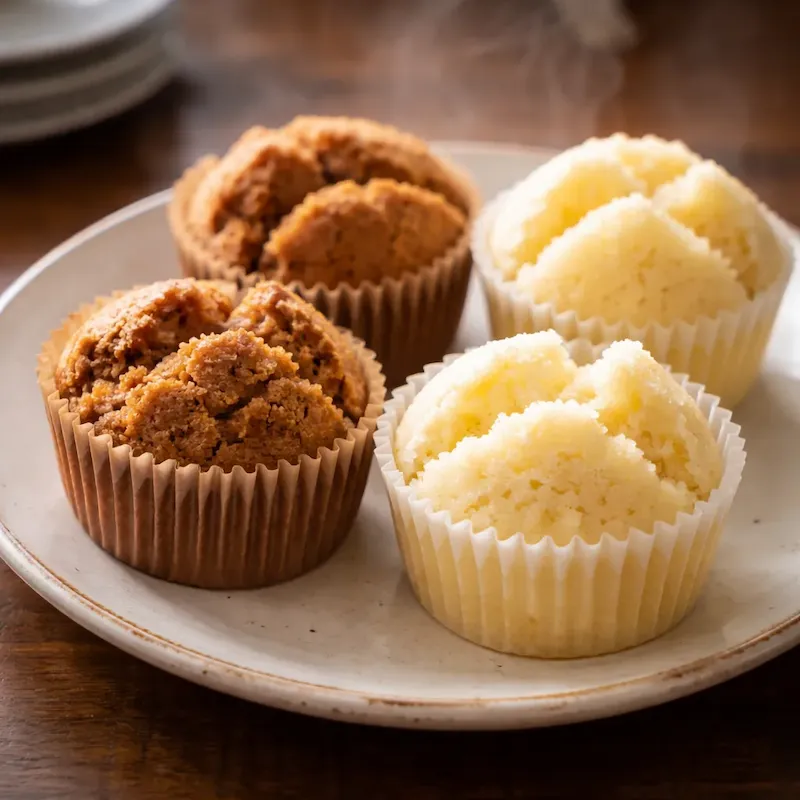 |
| 豚となすとにんじんの出汁しゃぶ | assets/recipe/nasubutamiso.webp | |
| なすの蒸し煮・梅風味だしあん | assets/recipe/umenasuni.webp |
🎞 動画 / Videos
| ファイル名 | 出典サイト | 作者名・ID | ライセンス | メモ（使用箇所 |
|---|---|---|---|---|
| 5835661-sd_960_540_25fps.mp4 | Pexels での Taryn Elliott による動画 | Taryn Elliott | Free | hero セクションの背景 |
| 5835661-hd_1920_1080_25fps.mp4 | Pexels での Taryn Elliott による動画 | Taryn Elliott | Free | hero セクションの背景 |
🎞 音 / Sounds
| ファイル名 | 出典サイト | 作者名・ID | ライセンス | メモ（使用箇所） |
|---|---|---|---|---|
| alarm.mp3 | 自作 | 自分（GarageBand ） | - | タイマー完了通知 |
🎨 フォント・アイコン / Fonts Icons
本プロジェクトで使用しているフォントとアイコンの出典・ライセンスを記録します。 （各素材はライセンス条項に従って使用しています。取得日は記録目的です。）
Fonts（Google Fonts / Web 配信）
Zen Maru Gothic
- Variants:
Regular - Source: https://fonts.google.com/specimen/Zen+Maru+Gothic
- License: SIL Open Font License 1.1 — https://scripts.sil.org/OFL
- Obtained: 2025-09-19
- Variants:
Zen Kaku Gothic New
- Variants:
Regular,Bold - Source: https://fonts.google.com/specimen/Zen+Kaku+Gothic+New
- License: SIL Open Font License 1.1 — https://scripts.sil.org/OFL
- Obtained: 2025-09-19
- Variants:
Kiwi Maru
- Variants:
Regular - Source: https://fonts.google.com/specimen/Kiwi+Maru
- License: SIL Open Font License 1.1 — https://scripts.sil.org/OFL
- Obtained: 2025-09-19
- Variants:
M PLUS 1p
- Variants:
Regular - Source: https://fonts.google.com/specimen/M+PLUS+1p
- License: SIL Open Font License 1.1 — https://scripts.sil.org/OFL
- Obtained: 2025-09-19
- Variants:
Zen Kurenaido
- Variants:
Regular - Source: https://fonts.google.com/specimen/Zen+Kurenaido
- License: SIL Open Font License 1.1 — https://scripts.sil.org/OFL
- Obtained: 2025-12-08
- Variants:
Kosugi Maru
- Variants:
Regular - Source: https://fonts.google.com/specimen/Kosugi+Maru
- License: SIL Open Font License 1.1 — https://scripts.sil.org/OFL
- Obtained: 2026-2-11
- Variants:
Notes: Google Fonts 経由で配信。ローカル同梱・サブセット化なし（現状）。
Icons（Material Symbols）
現在使用中（SVG 個別読込）
Source: https://fonts.google.com/icons
License: Apache License 2.0 — https://www.apache.org/licenses/LICENSE-2.0
Use: SVG を個別に取得し
<img>／<svg>で使用Used icon names:
play_circle,stop_circle,refresh,volume_off,help,close,sound_sampler,mobile_vibrate,toast,mail,printObtained:
- 2025-12-08
- 2026-02-14
Notes:
- 個別 SVG 化により読み込みの制御性・可読性向上
- UI操作アイコンとして使用。軽量化のためフォントは未使用。
過去の方式（Static icon font）
- Source: https://fonts.google.com/icons
- License: Apache License 2.0 — https://www.apache.org/licenses/LICENSE-2.0
- Fonts:
<link href="https://fonts.googleapis.com/...">で読み込み（Google Fonts）。 - Use:
<span class="material-symbols-outlined">icon_name</span>形式で利用 - Period: 2025-09-19〜2025-12-08 頃
ウェブツール
- Obtained: 2025-12-08
Change Log
- 2026-01-14: 第 3 版作成レシピ画像・Material Symbols・Google Fonts 追加
- 2026-02-26: 画像ファイル名変更に伴うパス修正
- 2025-12-08: 第 2 版作成
- Material Symbols を Static font → SVG 方式に変更（現行方式へ）
- icon name を一覧化し明確化
- ギャラリー画像追加
- 2025-09-19: 初版作成（動画、音、Google Fonts 4 ファミリー、Material Symbols 記載）
📝 備考 / Notes
- ライセンスが CC0 / Free でも、公開物（GitHub 等）には出典元を記載する方針。
.assets_credit.mdは開発中でも随時追記・更新。